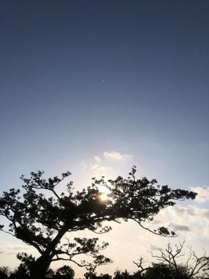
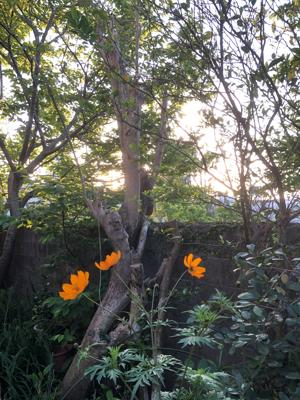

うるがいの話 ある日
最新: オーボエが吹けない【うるがいの話 ある日】とは 一日だけのプログです
『うるがいの話』の最新一日だけのプログで、通信料が少なく経済的だ。カニの画像をクリックすると全ての日付が載る『うるがいの話』サイトを表示します
|
|
【うるがいの話】 うるがい(ｳﾙｶﾞｲ urugai)とは、『もずくがに』の名前でとても大きくなります。 |
|---|---|
|
|
【カミマヤーの話】 猫のことを方言でマヤーといいます。カミマヤー（kamimayaa）とは、神の猫のことです。 |
|
【たながぁの音楽】 たながぁ（ﾀﾅｶﾞｰtanagaa）とは手長えびのことで、何種類かあり大きいのは車 エビぐらいになります。 |

|
【ぶながぁの話】 ぶながー(bunagaa)とは、赤い髪の毛、赤い身体、そして身長は１ｍ２０ｃｍ ぐらい、川の蟹を食べているの目撃された。場所は沖縄県国頭郡大宜味村のと ある村僕の隣近所に住んでいる爺さんから、聞いた話です。 |
|
|
【ギーマの話】 ギーマ(giima)とは、山原の里山に咲くスズランに似た、 花を付けます。実は食べられます、 気が付くと口の周りが紫になっています。 |
2022年03月13日 (日）オーボエが吹けない
16:41

リンのほうはある朝起きてみると、なぜか金輪際オーボエが吹けなくなってい
たからなのだった。オーボエのことを除けば、どこも悪いところはなかった。
「歩けたし、話せたし、読めたし、書けた。楽譜を読むことだってできた。そ
れなのに、オーボエからは一音たりとも引き出すことはできなかった。オーボ
エの持ち方すらわからなくなっていた。
なぜ記憶が消えるのか - 神経病理学者が見た不思議な世界 - ハロルド・L．
クローアンズ - 引用
朝ドラ『カムカムエヴリバディ』その時、錠一郎はトランペットを手にしてい
ました。・・・、本によれば頭の神経の異常で楽器が突然演奏出来なくなると
あった。「運動性失音楽病」というらしい。白夜だと診断できたのだろう。さ
て来週は、錠一郎はトランペットを吹くだろうか。うふ、本とテレビは気分転
換になる。

１６時３７分 ビットコインの総資産 ￥１３、２９０